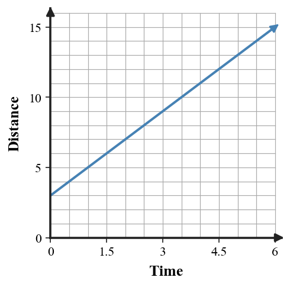

Learning Target
Students will connect tables, graphs, equations, and contexts that represent the same relationship.
- I can construct a table, graph, equation, or context from another representation of the same relationship.
- I can use features in one representation to work with a related table, graph, equation, or context.
- I can determine whether two representations belong to the same relationship using evidence from values, rates, or patterns.
Vocabulary / Key Notation Preview
- input-output pair
- coordinate graph
- equation
- rate
- equivalent representation
Sort the vocabulary. Write each vocabulary word in the column that best matches what you know right now. You may move a word later.
| Know for sure | Recognize | Don’t know yet |
|---|---|---|
What's to Come
DO NOT SOLVE IT YET.
Circle anything familiar, underline symbols, labels, conditions, data, or features that seem important, and write short notes about what you think may matter later.
The graph shows a distance-time relationship for one trip.

- Record two ordered pairs you can read exactly from the graph.
- Describe how distance changes for each 1 unit of time.
- Make a table for time values 0, 2, 4, and 6.
- Write an equation that could describe the same relationship.
- Explain one way the graph, table, and equation show the same relationship.
Step 2 — Skim the section. Record what catches your attention before you read closely.
| What I noticed | |
|---|---|
| What I predict | |
| What I wonder |
READ IN SHORT CHUNKS.
Annotate the words and visuals together. Underline evidence, circle or highlight bold vocabulary, label arrows, measurements, or important features, connect sentences to figures, and jot short questions or connections in the margins.
I Can 1 — I can construct a table, graph, equation, or context from another representation of the same relationship.
A relationship can be shown in several forms without changing what the relationship actually does. A table lists input-output pairs, a graph places those same pairs on coordinate axes, an equation gives a rule that generates the pairs, and a context explains what the quantities mean. The form changes; the paired values do not.
When a table has a constant change in output for equal changes in input, that change is a useful bridge to an equation. For a linear relationship, the rate is the coefficient of the input in a rule such as $y=mx+b$. The value of $y$ when $x=0$ gives the starting value $b$.
Contexts use the same structure. A starting amount plus a repeated change can be represented with a table, graph, or equation as long as each representation preserves the same quantities and units.
Look for ordered pairs and repeated changes.
Each plotted point is an input-output pair.
The rule must generate the same pairs.
Quantities and units give meaning to the rule.
Example 1: Build an Equation from a Table
| x | y |
|---|---|
| -2 | -5 |
| -1 | -2 |
| 0 | 1 |
| 1 | 4 |
Write an equation for the relationship in the table and state the constant change in output for a 1-unit increase in input.
You Try It 1: Build an Equation from a Table
| x | y |
|---|---|
| -2 | 7 |
| -1 | 5 |
| 0 | 3 |
| 1 | 1 |
Write an equation for the relationship and state the constant change.
Example 2: Translate a Context into Representations
A water tank already contains 12 liters. Water enters at 3 liters per minute. Write an equation for the amount $A$ after $m$ minutes and create a 3-row table that fits it.
You Try It 2: Translate a Context into Representations
A bike rental starts with a 6-dollar fee and costs 4 dollars per hour. Write an equation for cost $C$ after $h$ hours and make a table for $h=0,2,5$.
I Can 2 — I can use features in one representation to work with a related table, graph, equation, or context.
Features in one representation can help you build another. From an equation, substitute selected inputs to create a table. From a graph, read exact points and identify how much the output changes when the input changes. From a table, use the pattern of change and a known point to write a rule.
For a linear relationship, two especially useful features are the rate of change and the output when the input is zero. On a graph, these appear as slope and the vertical intercept. In a table, they appear through repeated changes and any row with input $0$.
Scale matters when reading a graph. A steep-looking line is not evidence by itself; the axis labels and spacing tell you the numerical change.
Example 3: Generate a Table from a Rule
Use $y=-2x+5$ to complete a table for $x=-1,0,2,4$. Then name one ordered pair from your table.
You Try It 3: Generate a Table from a Rule
Use $y=3x-4$ to find the outputs for $x=-2,1,3,5$ and write the four ordered pairs.
Example 4: Read a Graph into an Equation

Use the graph to write an equation and give two points that support your equation.
You Try It 4: Read a Graph into an Equation

Write an equation for the line and name one point that verifies it.
I Can 3 — I can determine whether two representations belong to the same relationship using evidence from values, rates, or patterns.
Two representations belong to the same relationship only if they agree on the mathematics, not merely on appearance. A quick check is to test a shared input and compare outputs. A stronger check also compares the rate or pattern of change.
For linear relationships, matching one point is not enough. Different lines can cross at one point. Matching a point and the same constant rate gives much stronger evidence that the representations describe the same line.
If a table has one incorrect row, test each row in the proposed equation. The first mismatch identifies where the representations stop agreeing; correcting that value restores the relationship.
Example 5: Diagnose a Representation Mismatch
| x | table y |
|---|---|
| -1 | 6 |
| 0 | 4 |
| 1 | 2 |
| 2 | 1 |
A student says this table represents $y=-2x+4$. Find the row that does not fit and correct it.
You Try It 5: Diagnose a Representation Mismatch
| x | table y |
|---|---|
| -1 | -1 |
| 0 | 2 |
| 1 | 5 |
| 2 | 9 |
A student says the table matches $y=3x+2$. Identify and correct any mismatch.
Example 6: Compare Two Relationship Descriptions
Relationship A is $y=\frac12x-3$. Relationship B contains the points $(0,-3)$ and $(6,0)$. Determine whether they can be the same relationship and cite two pieces of evidence.
You Try It 6: Compare Two Relationship Descriptions
Relationship A is $y=-3x+2$. Relationship B contains $(0,2)$ and $(2,-4)$. Determine whether they are the same relationship and explain with values or rate.
Summary
- Equivalent representations preserve the same input-output relationship.
- Rates, intercepts, ordered pairs, and patterns help translate among tables, graphs, equations, and contexts.
- To decide whether two representations match, check values and the pattern of change.
Common Mistakes
| Watch for | Reset the thinking |
|---|---|
| Matching by appearance only | Use numerical values, scales, ordered pairs, and rate/pattern evidence. |
| Changing a value while translating representations | Check that the same input produces the same output in every form. |
| Using one matching point as proof | Also compare rate or another pattern feature. |